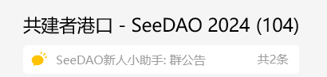
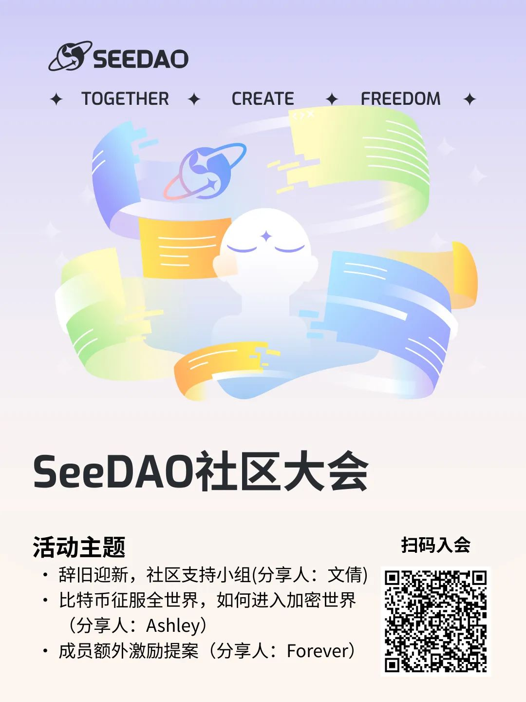

亲爱的社区成员&伙伴们：
今晚八点，是咱们SeeDAO每周一次的社区生活大会，除了日常在「共建者港口」热烈交流，更邀请您与我们一起展开社区线上生活，于共在中对话。社区运营Ashley汇集一周要点，邀约嘉宾分享，为大家准备精彩内容👇 (文末附 SeeDAO共建者 通道）

今 晚 主 题：
1、辞旧迎新，社区支持小组 —— 文倩
在高度流动、碎片化和不确定性的环境中，人们越来越难保持外在的完整性。特别是在外部世界无法稳定时，我们可能需要反向思考，如何在内心建立一套观念，保持个人的完整性。社区支持小组计划从「有效休息」与「有效寻找」双线并行。
2、比特币征服全世界，如何进入加密世界 / 跳进兔子洞 ? —— Ashley
加密世界是一个崭新的，同时也是颠倒的暗黑森林；也有人称它为 加密无限花园、兔子洞... 典故来自 1865 年 Lewis Carroll 的经典儿童小说 Alice's Adventures in Wonderland（爱丽丝梦游仙境），当中第一章就是 “Down the Rabbit Hole”，后来引申为比喻不自觉掉进逻辑倒置的世界， 从此过上截然不同的生活。
无论它是什么，在了解和进入之前，最好记得带上一根安全拐杖；与你同频的社区就是那一根拐杖。SeeDAO新手村将很快重启，为大家导航护航；同时共建者港口也一直敞开着，欢迎 SNS 持有者。
3、社区成员额外激励提案 —— Forever
作为S8节点，明显感觉S8季度品牌线有大幅增长，故自费购买了相关数据，由此得知，微信公众号阅读量对比S7季度完成了437%的增长率，但岗位评估上限仅为120%，本着Pow原则，实现多劳多得，建立正向的，公平的激励体系，故申请对品牌协调进行额外激励，以下将以微信公众号为例，进行数据分析。
相关提案：https://app.seedao.xyz/proposal/thread/296
最后，欢迎持有 SNS 成员 联系新人小助手+seedao2023 进入微信「共建者港口」
SNS 介绍：Mint SNS，领取你的数字城邦身份
今晚活动地点：
zoom会议号：539 363 9014
密码：seedao
活动时间：
今天 12月12日 北京时间 晚上八点
